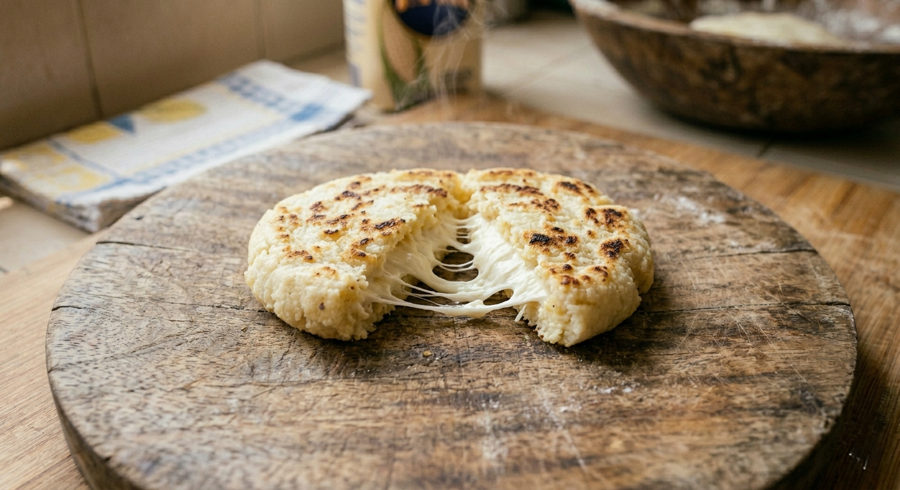
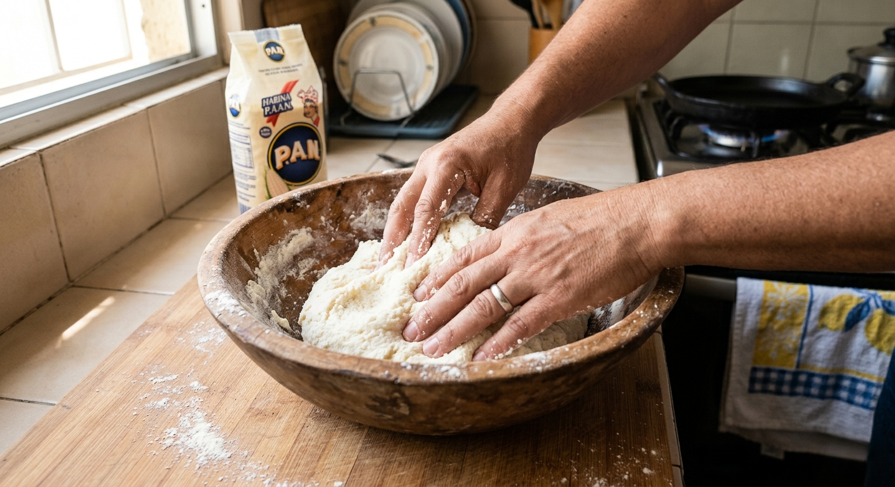
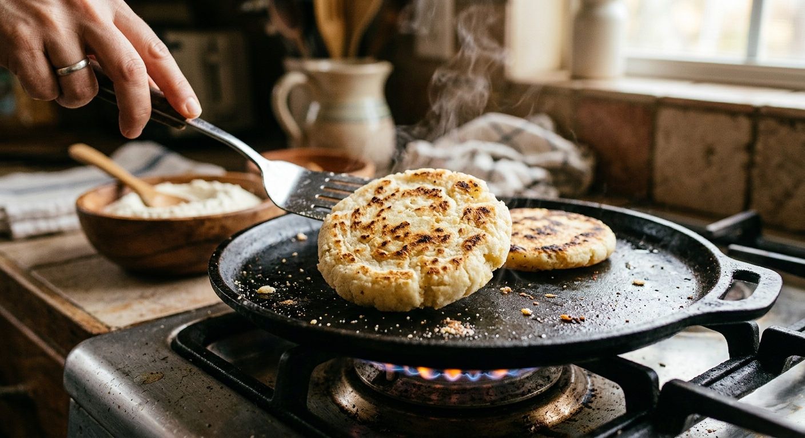
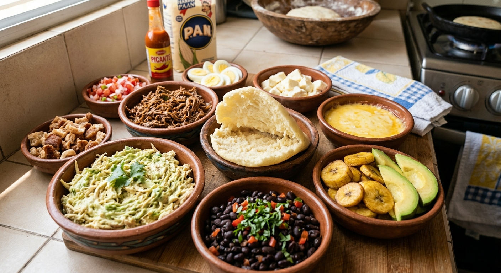

La Arepa: El Pan de Cada Día

La arepa es el símbolo gastronómico más importante de Venezuela. Hecha a base de harina de maíz precocida, su versatilidad permite que se consuma en el desayuno, almuerzo o cena. Su origen se remonta a los ancestros indígenas, quienes cultivaban el maíz y lo procesaban para crear esta masa circular que hoy une a todos los venezolanos.
Lo que hace especial a la arepa no es solo su masa crujiente por fuera y suave por dentro, sino los infinitos rellenos que puede albergar. Desde la clásica "Reina Pepiada" (pollo con aguacate y mayonesa) hasta la "Pelúa" (carne mechada con queso amarillo), cada combinación cuenta una historia diferente de la cultura caribeña.
Prepararla es un ritual en los hogares venezolanos. Se amasa con agua y un toque de sal hasta lograr la consistencia perfecta, se le da forma circular con las manos y se cocina tradicionalmente en un budare. Es un alimento que trasciende clases sociales y regiones, siendo el corazón de la mesa familiar.


